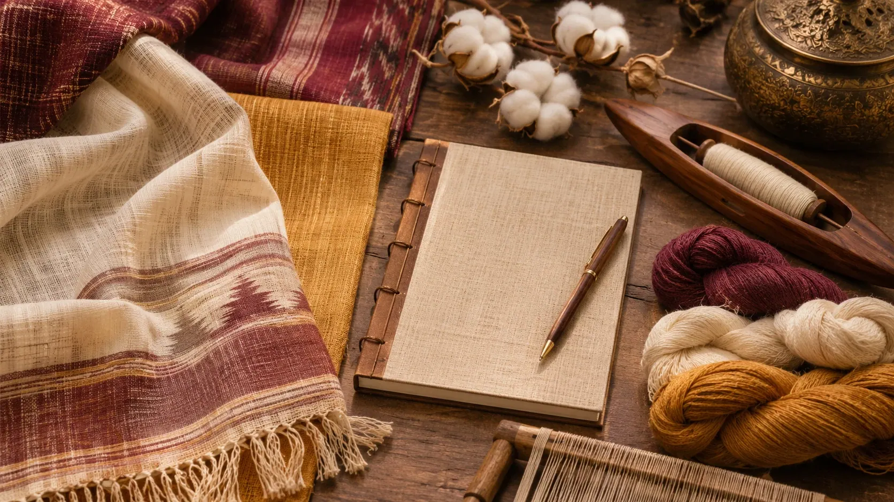

01
Simple explanationsWe translate textile terms into everyday language without losing their meaning.NOOLMAYAM JOURNAL
Notes from the textile world.
Ideas that help you read, choose, style and care for woven cloth—with craft knowledge at the center.

No articles match your search.
EDITORIAL APPROACH
Knowledge that stays practical
Every article is written to help readers move from admiration to informed textile decisions.
02
Useful comparisonsTopics connect material, drape, care and real-world use so readers can choose with more confidence.03
Craft at the centreThe goal is not only to inform, but also to deepen appreciation for the makers and the weaving traditions behind the cloth.THREE WAYS TO BEGIN
Read more deeply. Choose more thoughtfully.
A short route through the journal for readers exploring handwoven cloth for the first time.
Understand the vocabulary
Begin with the difference between handloom weaving and Khadi before comparing fabrics.
Look closely at texture
Explore yarn variation, drape, borders and weave structure while reading product descriptions.
Care for each material
Follow the maker’s instructions and take particular care with dyes, delicate finishes and embellishments.